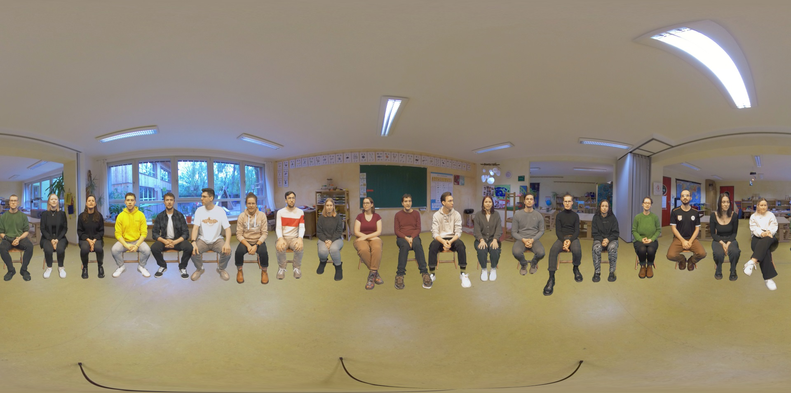

ECoClass-VR
The goal of this project is the evaluation of the cognitive performance in classroom scenarios using audiovisual virtual reality.
For this purpose, the suitability of the socalled "audiovisual scene analysis test paradigm" is investigated.
To increase the realism of the experimental procedure and to compare two different visualization approaches, new 360° videos and computer-generated imagery (CGI) models of classrooms were created.
As a research assistant, I was responsible for the design and implementation of both Immersive Virtual Environments (IVEs) in Unity.
360° video-based IVE:
CGI IVE:

Project characteristics
:- Title: Evaluating cognitive performance in classroom scenarios using audiovisual virtual reality" (ECoClass-VR)
- Team: 10 people
- Duration: January 2021 - December 2023
- Project partners: TU Ilmenau, RWTH Aachen and TU Kaiserslauten
- Related papers:
- GitHub repository: AVT-ECoClass-VR
360° video-based IVE:
- Unity setup: XR Interaction Toolkit
- Scene input: final videos rendered for each subject using FFmpeg
- Speaker-to-story mapping: JSON files generated with a Python script
- Story-to-speaker mapping input system: interaction via graphical user interface (UI) operated with an HTC Vive controller.

Equirectangular still image of one 360° video
Video 1: 360° demo scene
- Unity setup: XR Interaction Toolkit
- Avatars: Postprocessing of the 20 3D scans of the speakers using Artec Studio 16
- Rigging phase: using Adobe Mixamo and Blender
- Design of the 3D model of the classroom: using SketchUp Make 2017 to facilitate the future integration of the classroom scene into the Room Acoustics for Virtual ENvironments (RAVEN) room acoustic simulation environment software
- Speaker-to-story mapping: JSON files generated with a Python script
- Story-to-speaker mapping input system: interaction via graphical user interface (UI) operated with an HTC Vive controller.
Viewport of the CGI scene
Video 2: CGI demo scene